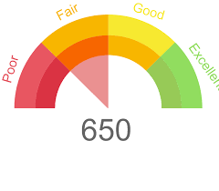
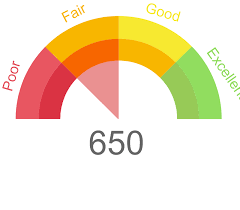
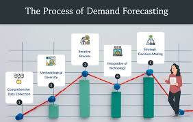

Cleaned and transformed a raw layoff dataset using SQL techniques such as removing duplicates, standardizing categorical values, handling nulls, and filtering irrelevant records. This project ensured a reliable and analysis-ready dataset, laying the foundation for accurate insights and reporting.
 

This project predicts a person's credit score based on their financial data using machine learning models.
Conducted a comprehensive SQL-based exploratory data analysis on tech layoffs. Identified key trends by aggregating data by company, industry, location, and year. Used CTEs and window functions to derive rolling layoffs, top contributors, and yearly comparisons to uncover business patterns and sector vulnerabilities.

This project forecasts retail product demand using machine learning and visualizes the results in Power BI. It combines data engineering, model building, and business intelligence.
Developed a fraud detection system using a real-world financial transactions dataset to identify fraudulent behavior in banking operations. This end-to-end project covers data preprocessing, model development, and dashboard deployment for business insights.
An interactive Power BI dashboard analyzing global data professional trends including salary, tools, and work satisfaction, offering deep insights through dynamic visuals and filters.

Analyzed a bike sales dataset in Excel using pivot tables, charts, and formulas. Cleaned and structured the data, calculated KPIs such as revenue and customer segmentation, and presented insights through interactive dashboards. Demonstrated strong proficiency in Excel for business analysis.

This project involves analyzing a dataset to answer 18 key questions related to customer purchasing behaviors, demographics, and trends. The analysis is carried out using Python, with the goal of uncovering insights that can be applied to retail decision-making.

Designed an end-to-end Tableau dashboard to analyze Airbnb listings data, uncovering insights about pricing, availability, and customer engagement trends across various locations.